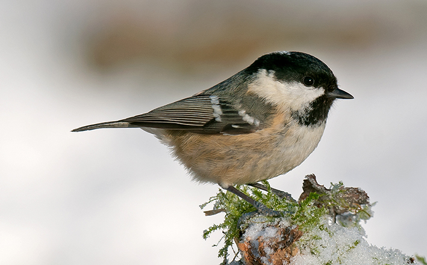

The Coal Tit is a small tit, in fact the smallest European tit, and could be confused
with the almost indistinguishable Marsh Tit and Willow Tit if it was not for the white
patch on the nape. While it behaves like a Blue Tit, there is no blue in its plumage.
The upperparts are a olive-grey, the underparts buff coloured. The crown and large bib
are black, while the cheeks and nape are white. There are also two white wing bars on
each wing - this feature separates it from the Marsh and Willow Tits if the nape is not
visible. The legs are blue-grey.
Not as colourful as some of its relatives, its smaller, more slender bill than blue or
great tits means it can feed more successfully in conifers.
Juveniles are browner above, and the underparts, cheeks, nape and wing bars are more yellow.
A regular visitor to most feeders, they will take and store food for eating later.
In winter they join with other tits to form flocks which roam through woodlands and
gardens in search of food.
Insects, beech mast and conifer seeds are among the Coal Tit's natural diet. In the garden, they prefer black sunflower seeds, sunflower hearts and occasionally suet. Look out for coal tits making quick visits to feeders, they don't like to hang around, and prefer to dash back to a safe perch in a tree or bush to eat. When food is plentiful they hoard it by hiding it all over the place so that they food for later when times are harder. Unfortunately, the Coal Tit's memory is not as great as its ingenuity in hiding places and you will often find forgotten sunflower seeds germinating in the most unlikely places! Great Tits can sometimes be seen watching a Coal Tit stashing away its seed and then go and raid it.
Woodland Heathland Urban and suburban.
Coal tits can be seen in woodland, especially conifer woods, parks and gardens
Coal tits can be seen all year round.